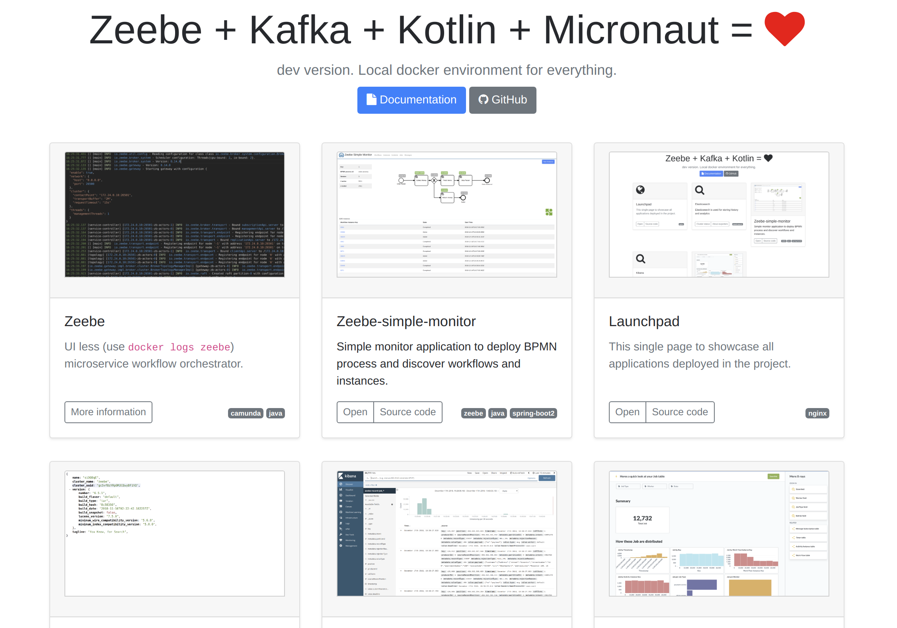
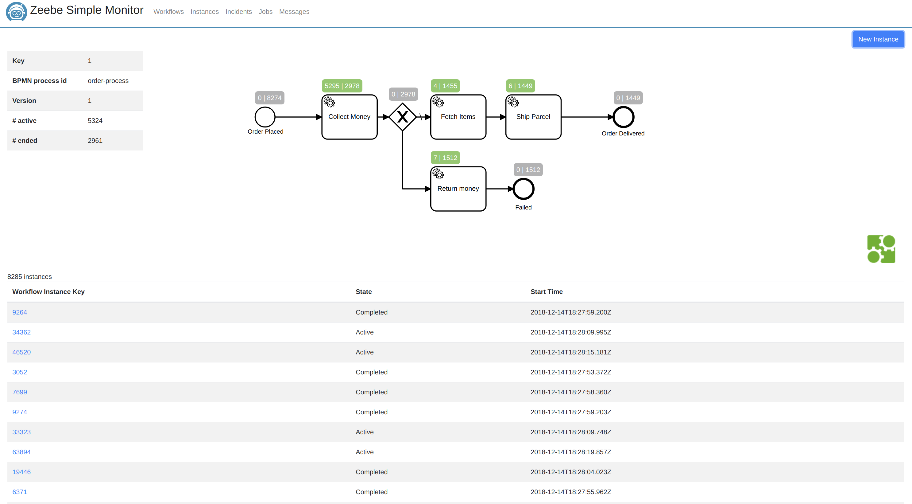

Launchpad
This single page to showcase all applications deployed in the project.
nginx
Elasticsearch
Elasticsearch is used for storing history and analytics
elasticsearch

Zeebe-simple-monitor
Simple monitor application to deploy BPMN process and discover workflows and instances.